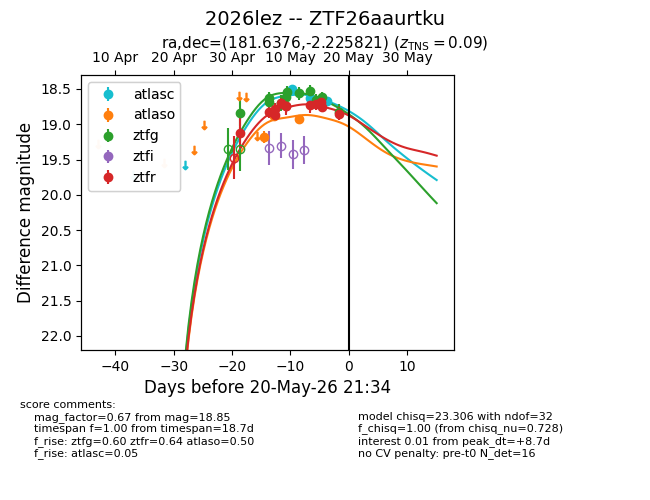
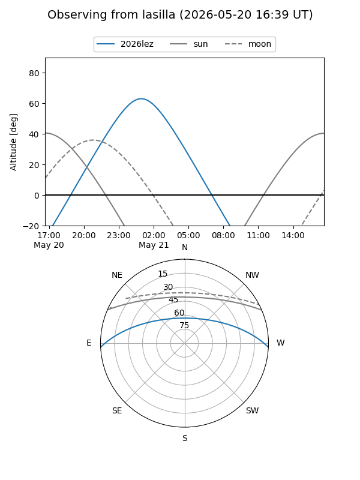
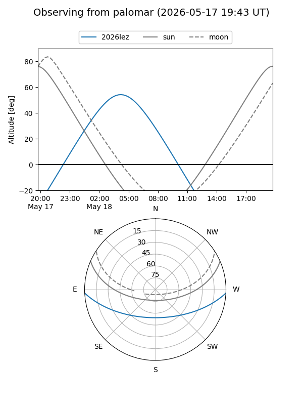
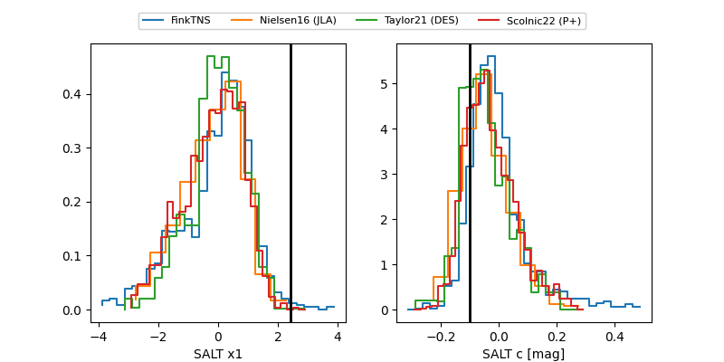

2026lez
Target 2026lez at 2026-05-20 21:36
Aliases and brokers:
FINK: link
Lasair: link
ALeRCE: link
TNS: link
YSE: link
alt names
ZTF26aaurtku (ztf,fink_ztf)
2026lez (tns,yse)
Coordinates:
equatorial (ra, dec) = 181.6376,-2.22582
equatorial (HMS+DMS) = 12:06:33.02,-02:13:32.96
galactic (l, b) = (280.9395,+58.71603)
Flags:
confirmed ia
Photometry:
last atlasc=18.67, atlaso=18.92, ztfg=18.82, ztfr=18.85
3 atlasc, 3 atlaso, 11 ztfg, 12 ztfr detections
Lightcurve

Visibility


Additional plots
